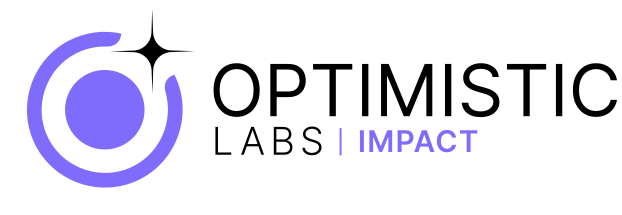
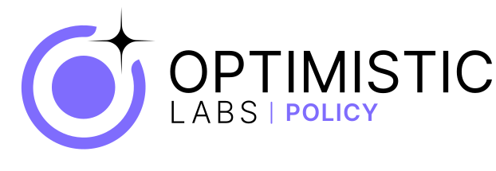

Become a lab leader
Become a lab leader

Build your practice. Not the whole apparatus.
You bring the mission, the expertise, and the community. We bring the strategy, the platforms, the trusted network, the brand, and the operating apparatus to run it. Start a lab under the Optimistic Labs umbrella — and stop building alone.
Why a lab
You've earned a community. Now build the practice it deserves.
Most experienced practitioners hit the same wall. The expertise is real. The community is real. The point of view is sharp. But turning all of that into a practice means becoming an operator overnight — building the brand, the offerings, the pricing, the platforms, the pipeline, the back office. So the work that made you worth following gets crowded out by the work of keeping the lights on. A lab is the answer to that. You keep the mission and the relationships. We carry the apparatus underneath them. If you want to build a house, you don't start with the tools. You start with the architect.
What you get
The apparatus, so you can lead the mission.
Strategy and infrastructure behind you
Optimistic Labs sits underneath your lab — the strategy, the platforms, and the operating systems that turn a point of view into a working practice. You lead the community. We architect the machine that lets you scale it.
A trusted network already in motion
You join an ecosystem of operators, creators, and builders who are already moving — including partners who have stood up practices like this before. Independence without isolation. You set the direction; the network gives you momentum from day one.
Help productizing and pricing your offerings
We work with you to turn your methodology into clear, packaged offerings and tiers — the difference between selling your time and building a practice. Concrete deliverable shapes, honest pricing, repeatable value. (Specific tiers are designed per lab.)
A co-branded lab, with real credibility
Your lab launches under a shared lockup — OPTIMISTIC LABS | YOUR LAB — so you carry the weight of the brand and the trust of the network while keeping your own name and voice front and center. Faith Lab is the model for how this looks in practice.
Go-to-market and demand generation
We bring the apparatus that gets you in front of the right community: positioning, channels, and a demand engine built for your vertical. You spend your time on the work only you can do, not on chasing the next conversation.
Shared tools, shared learnings, shared upside
Every lab makes the next one sharper. You get the systems, the playbooks, and the experiments that are already working across the ecosystem — and a model where doing well by your community means doing well, period.
How it works
From your idea to a lab in market.
Start with the mission and the people you already serve. Pitch us the lab you want to build — the vertical, the point of view, the community you have momentum with. This is a conversation, not an application.
We architect it together: the methodology, the packaged offerings and tiers, the positioning, and the co-branded lockup. Community has to be designed — so we design yours on purpose, not by accident.
Your lab goes to market with the strategy, platforms, brand, and trusted network behind it. You step into leadership on day one with the operating system already running underneath you.
We support the practice as it scales: demand generation, new offerings, shared learnings from across the ecosystem. Your lab gets stronger, and so does every lab next to it.
Who it's for
Who leads a lab.
Lab leaders are experienced practitioners and community leaders — operators with a real audience and a real point of view who want to build a practice, not just a personal brand. If you've already earned trust in a community and you're ready to turn it into something durable, this is built for you.
- You serve a specific community or vertical and know it deeply
- You have a methodology or point of view that's yours, not borrowed
- You want to build a practice that outlasts your personal feed
- You'd rather lead the mission than assemble the back office
- You value independence — but you're done building it all alone
Proof
The labs already building.
Led by Aliza Goodman. The first lab with a dedicated practice, and the model for how a lab leader brings the community while OL brings the apparatus.

A practice built for leaders and organizations working toward measurable good — strategy and trusted networks pointed at outcomes that matter.

Where practitioners shaping policy build community and credibility around a clear, human point of view.
A lab for the people building the culture, the connection, and the systems around sport — on and off the field.
Questions
Good questions, straight answers.
What exactly is a "lab"?
How is this different from just starting my own thing?
Do I keep ownership of my brand and my community?
What do I actually get from Optimistic Labs?
What kind of person makes a strong lab leader?
What happens after I book a call?
Pitch us the lab only you could lead.
If you have a community, a point of view, and the ambition to build something durable, we want to hear it. Bring the mission. We'll bring the architect, the apparatus, and the network. Let's design your lab together.